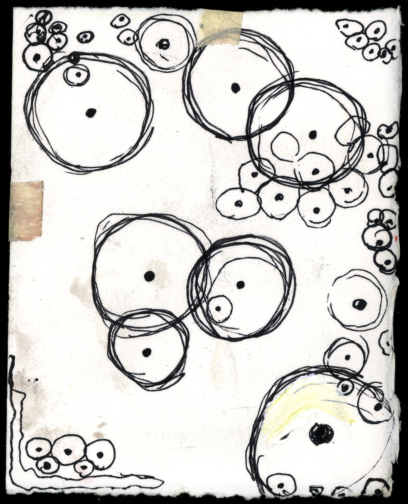

|  | DistDNA |
|
DistDNA was developed to allow efficient building of DNA sequence
distance matrices. The program is both memory and time efficient and
offers improved performance over equivalents like EMBOSS COMPSEQ or
PHYLIP DISTDNA. DistDNA requires a data set of aligned DNA sequences in FASTA/PEARSON format. |
|
|
For publication of results, please cite: Valverde, J. R. (2009) And the bibliography related to the method chosen. |
|
| The background picture, Lemon Tree is based on the work of artist Marco Chieso (or Cruccone) | |
| The logo corresponds to the image Trees which is a work of artist Noaha | |
|
|